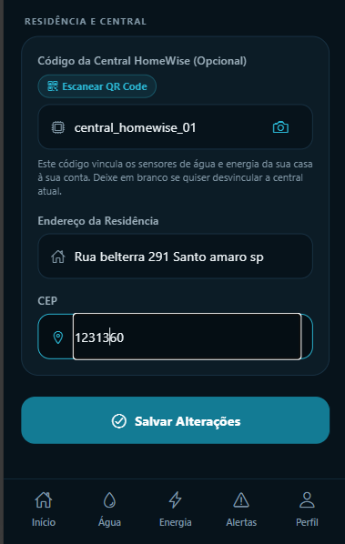
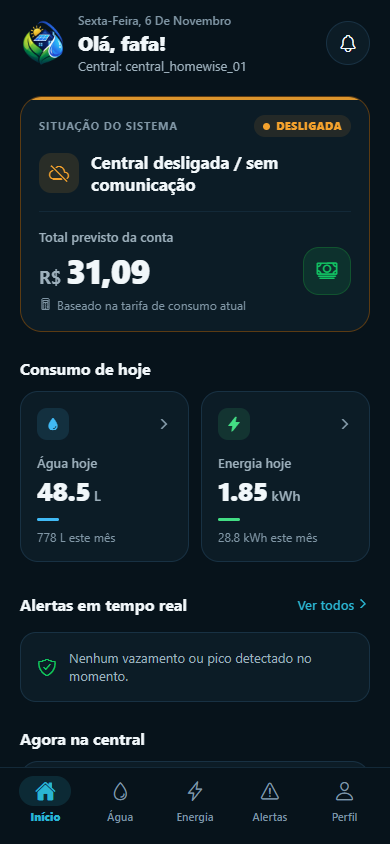
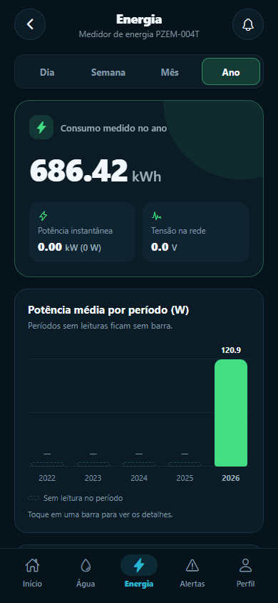
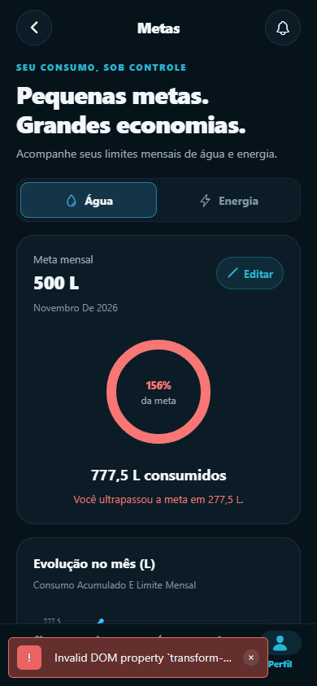

01
Conecte seus dispositivos
Instale os sensores de água e energia e conecte tudo ao aplicativo em poucos minutos.

Do primeiro sensor aos insights da sua casa: acompanhe como o HomeWise ajuda você a economizar.
Instale os sensores de água e energia e conecte tudo ao aplicativo em poucos minutos.

Acompanhe o consumo da sua casa e veja água e energia em um só lugar.

Saiba quando houver um consumo fora do normal e aja antes que ele pese na conta.

Use históricos e insights para entender seus hábitos e reduzir seus gastos.
